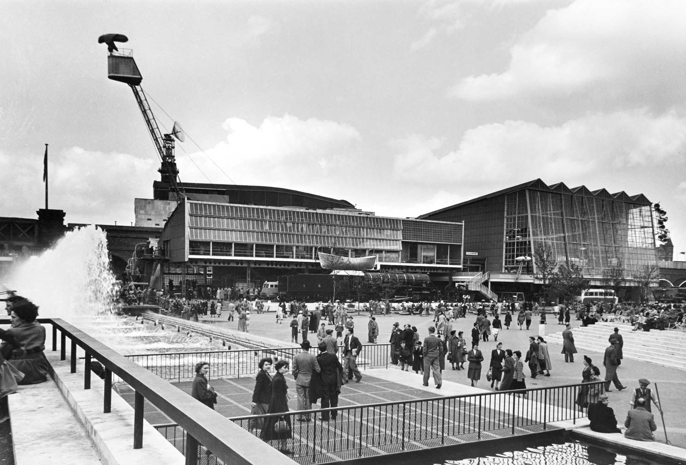

Flexible content component
This component grows depending on the amount of editorial content.
The image remains cropped using object-fit cover.
Test how image choices behave across different layouts and breakpoints. The simulator highlights where important content may be lost.

This component grows depending on the amount of editorial content.
The image remains cropped using object-fit cover.
Images should have enough space around the focal point so they survive every breakpoint.
2400px × 1600px
3:2 landscape
Centre 50% of image
Text, edge subjects, busy backgrounds